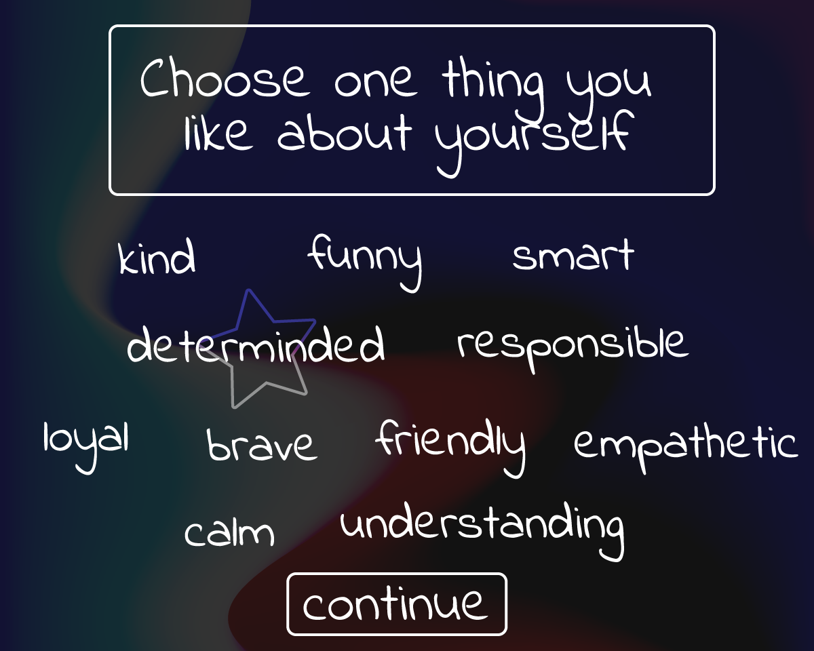

The story would take place mostly in a large scrolling page. The more important moments would be full screen, and small moments would require the player to scroll and click on images to reveal the rest of the story.
At the beginning of the story, the player will have to answer a few questions. One of these questions will require the player to choose one thing they like about themselves in order to progress. Not only is this implemented in the narrative, but I begins the story on a positive note. Because the narrative focuses on the important of self-love, it seems important start the idea right at the beggining.